Using the mapbaltimore package starts with understanding three key functions:
-
get_area(): Returns selected boundary data. -
get_area_data(): Returns data for an area. -
layer_area_data(): Wrapsget_area_data()to create a ggplot2 layer usingggplot2::geom_sf().
To show how these different functions work, I’ll make a simple
map_area function we will use in this article.
map_area <- function(x, col) {
ggplot(data = x) +
geom_sf(aes(fill = .data[[col]])) +
geom_sf_label(aes(label = .data[[col]])) +
guides(fill = "none")
}Get areas
The get_area function uses the
dplyr::filter() to select one or more areas of a specified
type of political or administrative geography. You can select any one of
the seven different types:
- Neighborhoods
- Baltimore City Council districts
- Maryland state legislative districts
- U.S. Congressional districts that include Baltimore City
- Baltimore City Planning Districts
- Baltimore City Police Districts
- Baltimore City Community Statistical Areas
Get areas by name or id
You can review the names (name) or identifiers
(id) for each type of area by looking at the corresponding
column in the data. Typically, the name column should also work as a
label for an area and the id column is used as a unique identifier. The
names require an exact match. For example,
get_area(type = "neighborhood", area_name = "Washington Village/Pigtown")
works but
get_area(type = "neighborhood", area_name = "Pigtown") will
return an error.
# Show the first 3 council district names
council_districts$name[1:3]
#> [1] "District 8" "District 7" "District 6"
# Get district 8 by name
get_area(
type = "council district",
area_name = "District 8"
) %>%
map_area("name")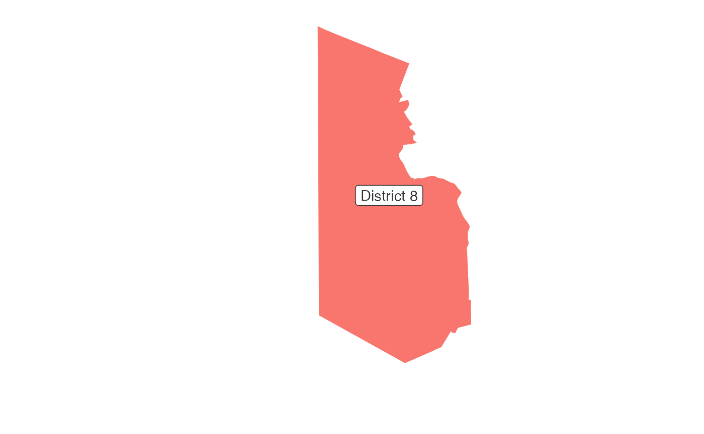
# Show the first 3 council district ids
council_districts$id[1:3]
#> [1] "8" "7" "6"
# Get district 7 by id
get_area(
type = "council district",
area_id = 7
) %>%
map_area("id")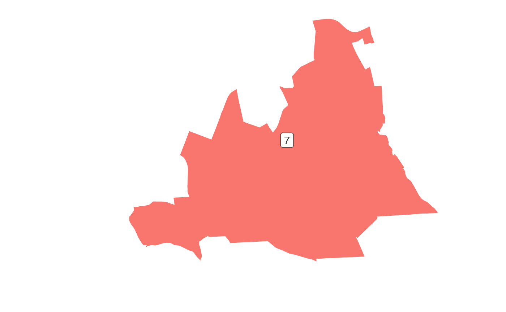
Get multiple areas
To return multiple areas, you can provide a vector of names or identifiers.
area_multiple <- get_area(
type = "neighborhood",
area_name = c("Mount Vernon", "Mid-Town Belvedere", "Seton Hill")
)
area_multiple %>%
map_area("name")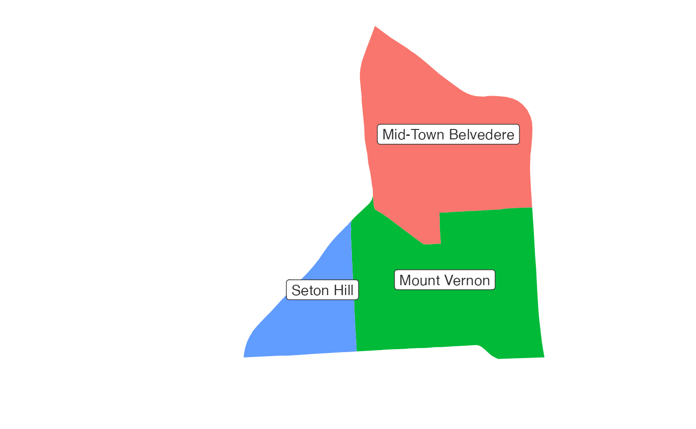
You can also combine multiple areas into a single simple feature
using the union parameter. This is helpful when you want to
get data for multiple neighborhoods at the same time or map them as a
single combined area.
By default the area names are concatenated using a ampersand separator, however, the length of these combined names are difficult to fit on a map and it is often better to replace the name with a shorter alternative.
area_multiple_union <- get_area(
type = "neighborhood",
area_name = c("Mount Vernon", "Mid-Town Belvedere", "Seton Hill"),
union = TRUE
)
area_multiple_union$name
#> [1] "Mid-Town Belvedere, Mount Vernon, and Seton Hill"
area_multiple_union$name <- "Mount Vernon area"
area_multiple_union %>%
map_area("name")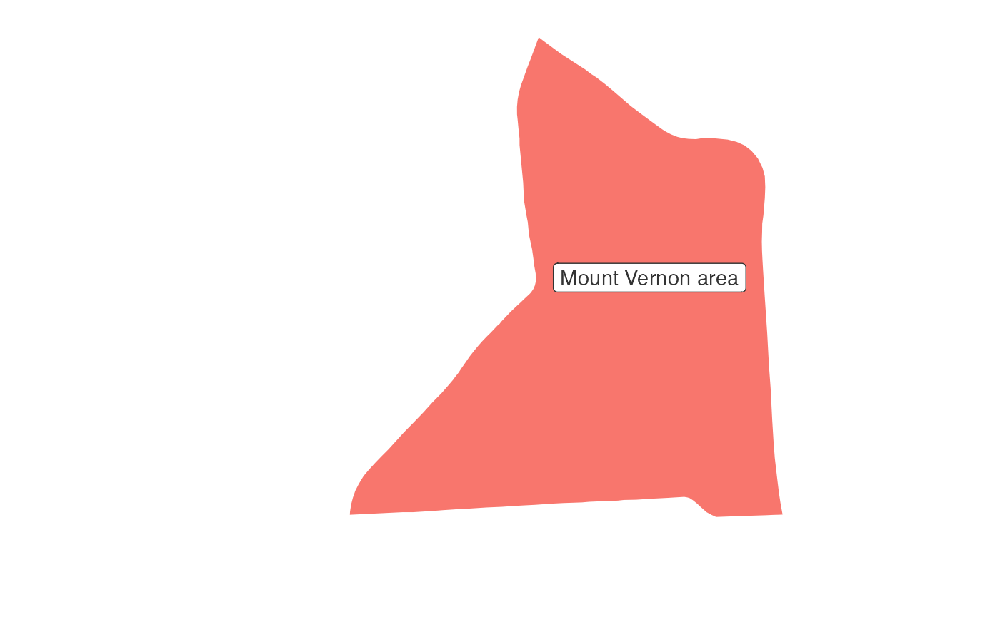
Get data for an area
The get_area_data() function offers a great deal of
flexibility. You can provide an area from get_area() or any
other simple feature polygon or multipolygon located within Baltimore
City (or any region if using cached baltimore_msa_streets
data set). You can also provide a bounding box created with the
sf::st_bbox() function.
To illustrate the options for this function, I’m getting the downtown
neighborhood as a simple feature object (area) and making a
list with ggplot2 layers, guide, and scale (area_layer)
that I reuse below for the example maps in this section.
area <- get_area(
type = "neighborhood",
area_name = "Downtown"
)
area_layer <- list(
geom_sf(data = area, fill = "grey90", alpha = 0.8, color = "grey20", linetype = "dotted"),
geom_sf_label(data = area, aes(label = name)),
guides(fill = "none"),
scale_fill_viridis_d()
)Adjust the area bounding box
In order to place an area in context, you may want a portion of data
for the surrounding area so the function returns data within the
bounding box of the area by default. The dimensions of this bounding box
can be adjusted using the dist, diag_ratio,
and asp parameters. You can access these adjustments
directly using the buffer_area(),
adjust_bbox_asp(), and adjust_bbox()
functions. These functions are used below to illustrate how they work
when you use the corresponding parameters with
get_area_data().
The dist parameter is passed to the
sf::st_buffer() function and is used to set the buffer in
meters for the area. The diag_ratio is also used to set a
buffer distances but the number represents the proportion of the
diagonal distance of the area bounding box. This is helpful because a
set ratio will scale in proportion to the size of the area.
example_dist <- 50
example_diag_ratio <- 0.25
# 50 meter buffer
area_dist <- buffer_area(area, dist = example_dist)
area_dist_bbox <- sfext::sf_bbox_to_sf(sf::st_bbox(area_dist))
# buffer 1/4 (0.25) of the diagonal distance of the bounding box
area_diag_ratio <- sfext::st_buffer_ext(area, diag_ratio = example_diag_ratio)
area_diag_ratio_bbox <- sfext::sf_bbox_to_sf(sf::st_bbox(area_diag_ratio))
ggplot() +
geom_sf(data = area_dist, fill = "purple", alpha = 0.1) +
geom_sf(data = area_dist_bbox, color = "purple", fill = NA) +
geom_sf(data = area_diag_ratio, fill = "darkorange", alpha = 0.1) +
geom_sf(data = area_diag_ratio_bbox, color = "darkorange", fill = NA) +
area_layer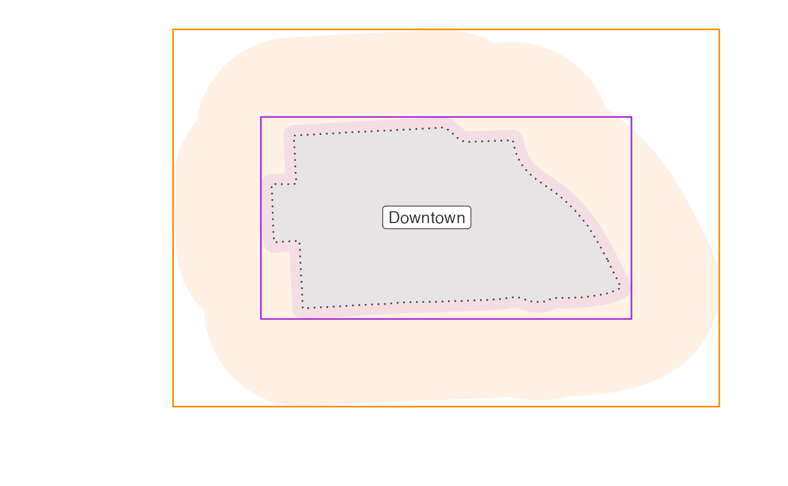
The asp parameter is applied after any buffers are
applied. The adjust_bbox_asp() function accepts either a
number, e.g. 1.5, or a string in the format most commonly used for
aspect ratios, e.g. “6:4”. This example shows the extent of a square
bounding box for both the buffered downtown areas created above.
example_asp <- "1:1"
area_dist_asp <- sfext::st_bbox_asp(area_dist, asp = example_asp) %>%
sfext::sf_bbox_to_sf()
area_diag_ratio_asp <- sfext::st_bbox_asp(area_diag_ratio, asp = example_asp) %>%
sfext::sf_bbox_to_sf()
ggplot() +
geom_sf(data = area_dist_asp, fill = "purple", color = "purple", alpha = 0.1) +
geom_sf(data = area_diag_ratio_asp, fill = "darkorange", color = "darkorange", alpha = 0.1) +
area_layer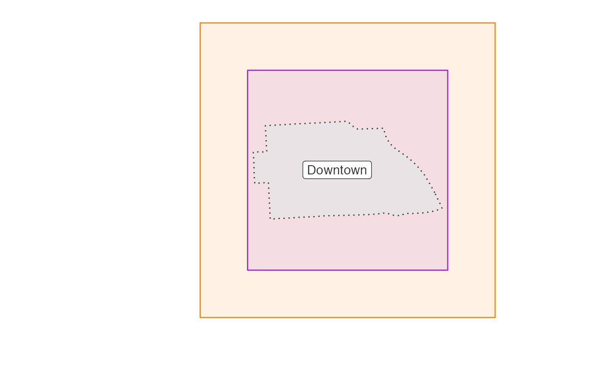
Cropping and trimming data
Finally, here is how these area adjustments work in combination with
the get_area_data() function. By default, the data is
cropped to the bounding box of the provided area:
get_area_data(
area = area,
data = council_districts
) %>%
map_area("name") +
area_layer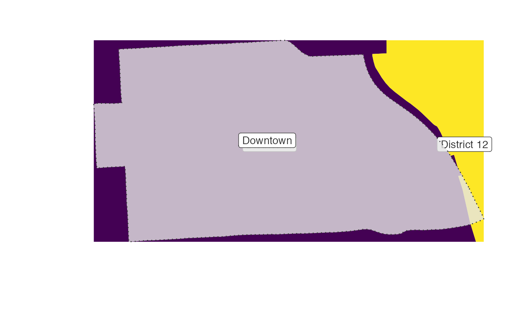
Here is the data with a diag_ratio buffer:
get_area_data(
area = area,
data = council_districts,
diag_ratio = example_diag_ratio
) %>%
map_area("name") +
area_layer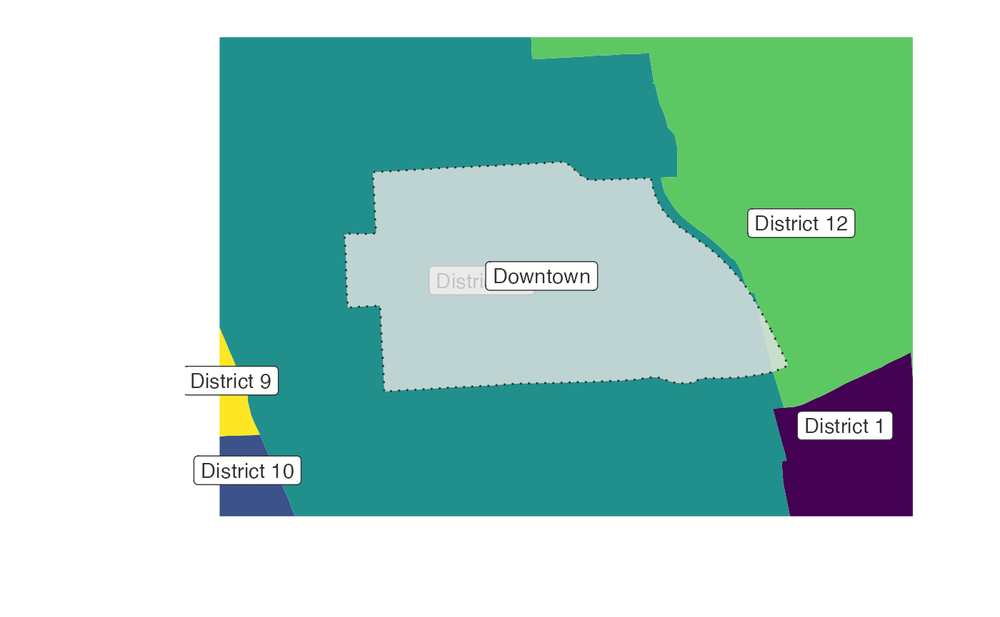
Here is the data using an asp adjustment to return a
square :
get_area_data(
area = area,
data = council_districts,
asp = example_asp
) %>%
map_area("name") +
area_layer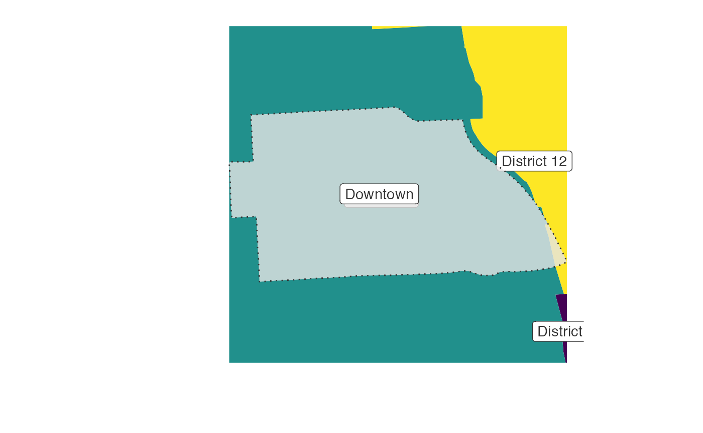
You can also avoid cropping if you want to return the full extent of
any data that even partially overlaps with the area or bounding box. For
example, this is the same example as above with
crop = FALSE.
get_area_data(
area = area,
data = council_districts,
crop = FALSE
) %>%
map_area("name") +
area_layer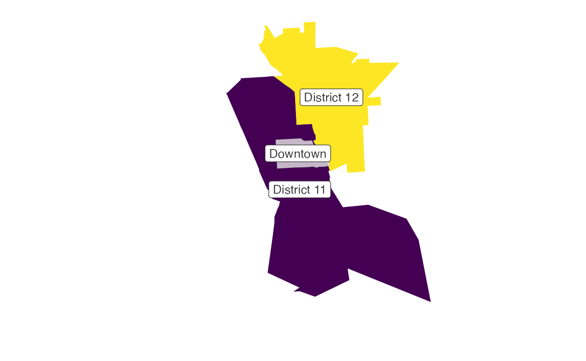
If you want to use crop = FALSE in combination with the
area adjustment parameters you must either supply a bounding box instead
of an area or adjust the area using buffer_area()
before passing it to the get_area_data() function. The maps
are similar enough to the prior example that I’ve hid the results but
provided the code here as a sample.
get_area_data(
area = sfext::st_buffer_ext(area, diag_ratio = example_diag_ratio),
data = council_districts,
crop = FALSE
)
get_area_data(
bbox = sf::st_bbox(area),
data = council_districts,
diag_ratio = example_diag_ratio,
crop = FALSE
)Depending on the type of data you are working with, you may also want
to trim the data to the area using the
sf::st_intersection() function. You can’t trim to an area
if you only provide a bounding box (bbox); you must provide
an area.
area_trees <- get_area_data(
bbox = sf::st_bbox(area),
extdata = "trees",
dist = example_dist
)
#> Reading layer `trees' from data source
#> `/private/var/folders/3f/50m42dx1333_dfqb5772j6_40000gn/T/Rtmpys5Z3S/temp_libpath5f71373ec142/mapbaltimore/extdata/trees.gpkg'
#> using driver `GPKG'
#> Simple feature collection with 1675 features and 15 fields (with 1 geometry empty)
#> Geometry type: POINT
#> Dimension: XY
#> Bounding box: xmin: 432400.8 ymin: 179937.8 xmax: 434147.1 ymax: 180891.7
#> Projected CRS: NAD83(HARN) / Maryland
area_trees_trimmed <- get_area_data(
area = area,
extdata = "trees",
dist = example_dist,
trim = TRUE
)
#> Reading layer `trees' from data source
#> `/private/var/folders/3f/50m42dx1333_dfqb5772j6_40000gn/T/Rtmpys5Z3S/temp_libpath5f71373ec142/mapbaltimore/extdata/trees.gpkg'
#> using driver `GPKG'
#> Simple feature collection with 1675 features and 15 fields (with 1 geometry empty)
#> Geometry type: POINT
#> Dimension: XY
#> Bounding box: xmin: 432400.8 ymin: 179937.8 xmax: 434147.1 ymax: 180891.7
#> Projected CRS: NAD83(HARN) / Maryland
ggplot() +
area_layer +
geom_sf(data = area_trees, color = "wheat3") +
geom_sf(data = area_trees_trimmed, color = "forestgreen", alpha = 0.8)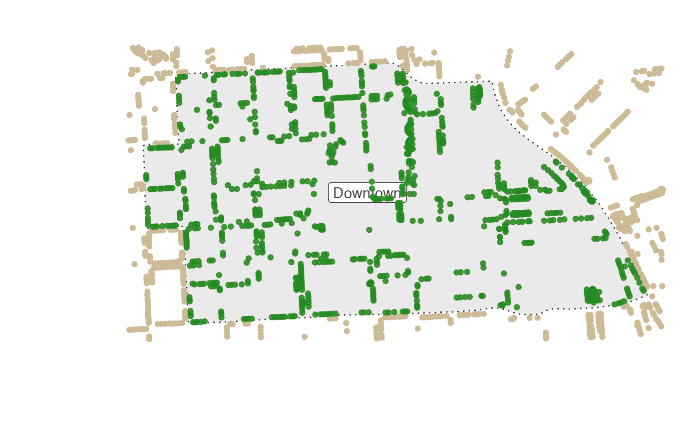
Similar to crop, using the trim = TRUE parameter ignores
any distance adjustments but the same work around can be used to apply a
buffer to the area before passing it to
get_area_data().
area_trees_trimmed_diag_ratio <- get_area_data(
area = buffer_area(area, diag_ratio = example_diag_ratio),
extdata = "trees",
trim = TRUE
)
#> Reading layer `trees' from data source
#> `/private/var/folders/3f/50m42dx1333_dfqb5772j6_40000gn/T/Rtmpys5Z3S/temp_libpath5f71373ec142/mapbaltimore/extdata/trees.gpkg'
#> using driver `GPKG'
#> Simple feature collection with 5462 features and 15 fields (with 2 geometries empty)
#> Geometry type: POINT
#> Dimension: XY
#> Bounding box: xmin: 431984 ymin: 179521.7 xmax: 434562.3 ymax: 181305.6
#> Projected CRS: NAD83(HARN) / Maryland
ggplot() +
area_layer +
geom_sf(data = area_trees_trimmed_diag_ratio, color = "forestgreen") +
geom_sf(data = area_trees_trimmed, color = "wheat3")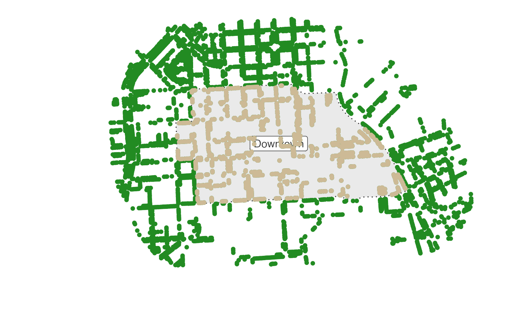
The trim parameter is also supported by the
get_area_esri_data() and get_area_osm_data()
functions that are discussed in more detail in the article on external,
cached, and remote data sources.
Layering data in area maps
You may be wondering why these all of these parameters may be useful.
The layer_area_data() function combines
get_area_data() with ggplot2::geom_sf() to
quickly turn the data from mapbaltimore into ggplot maps.
Here is a simple example that turns streets and parks data into a map of
the downtown area.
example_diag_ratio <- 0.05
layer_streets <- layer_area_data(
area = area,
data = streets,
color = "gray60",
diag_ratio = example_diag_ratio
)
layer_parks <- layer_area_data(
area = area,
data = parks,
fill = "forestgreen",
diag_ratio = example_diag_ratio
)
background_layers <- list(layer_streets, layer_parks)
ggplot() +
background_layers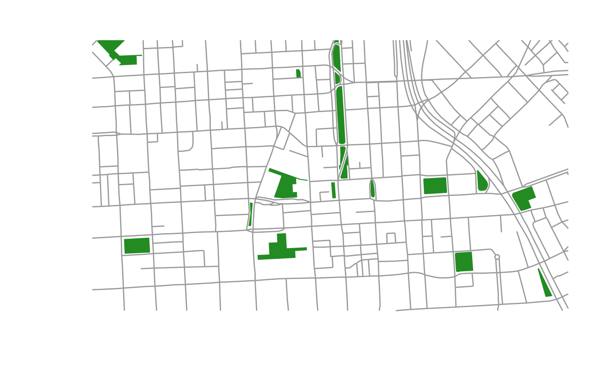
Like ggplot2::geom_sf(), layer_area_data()
can inherit data from ggplot() and allows users to set
aesthetics using the mapping parameter. Other ggplot2
objects such as scales, labels, and guides can be combined with a data
layer by providing a list to the layer_after parameter. The
show_area option also provides a convenient way to overlay
the boundaries of the area and the area_aes parameter
allows you to passed custom fixed aesthetics to the area layer. This
following example showing the BCPSS elementary school attendance zones
around downtown illustrates how these parameters work.
ggplot() +
layer_area_data(
data = bcps_zones,
area = area,
mapping = aes(fill = program_name_short),
diag_ratio = 0.25,
asp = example_asp,
show_area = TRUE,
area_aes = list(color = "white", linetype = "dotted", size = 1.25),
layer_after = list(
scale_fill_viridis_d(),
labs(fill = "Zoning category")
)
)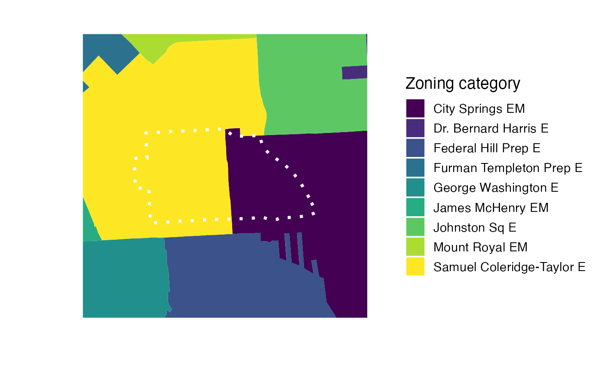
If you want to use data from one of the remote data functions, you
can set the asis parameter to TRUE indicating
that the data is already matched to the area and does not require any
additional adjustments. For example, the following example shows how to
create a new map layer using data imported from Open Street Map.
layer_area_buildings <- layer_area_data(
data = get_area_osm_data(
area = area,
diag_ratio = example_diag_ratio,
key = "building",
value = "yes"
),
asis = TRUE,
fill = "antiquewhite2",
color = NA,
alpha = 1,
layer_after = labs(caption = "© OpenStreetMap contributors")
)
#> Error in curl::curl_fetch_memory(url, handle = handle): HTTP/2 stream 0 was not closed cleanly: PROTOCOL_ERROR (err 1)
#> Request failed [ERROR]. Retrying in 1 seconds...
#> Error in curl::curl_fetch_memory(url, handle = handle): HTTP/2 stream 0 was not closed cleanly: PROTOCOL_ERROR (err 1)
#> Request failed [ERROR]. Retrying in 3.2 seconds...
#> Warning: attribute variables are assumed to be spatially constant throughout all
#> geometries
#> Open Street Map data is available under the Open Database Licence which requires attribution. See https://www.openstreetmap.org/copyright for more information.
ggplot() +
background_layers +
layer_area_buildings
You can also use the url parameter that is passed to
get_area_esri_data to add data from any ArcGIS MapServer or
FeatureServer. A local shapefile can be imported using the
path parameter.
parking_facility_url <- "https://opendata.baltimorecity.gov/egis/rest/services/Hosted/Parking_Facilities/FeatureServer/0"
layer_area_parking <- layer_area_data(
area = area,
url = parking_facility_url,
diag_ratio = example_diag_ratio,
color = "gray10",
fill = "yellow",
shape = 24,
size = 4,
layer_after = list(
ggtitle("Parking facilities in Downtown Baltimore")
)
)
#> ✔ Downloading "Parking_Facilities" from
#> <
#> Layer type: "Feature Layer"
#>
#> Geometry type: "esriGeometryPoint"
#>
#> Service CRS: "EPSG:3857"
#>
#> Output CRS: "EPSG:4326"
ggplot() +
background_layers +
layer_area_buildings +
layer_area_parking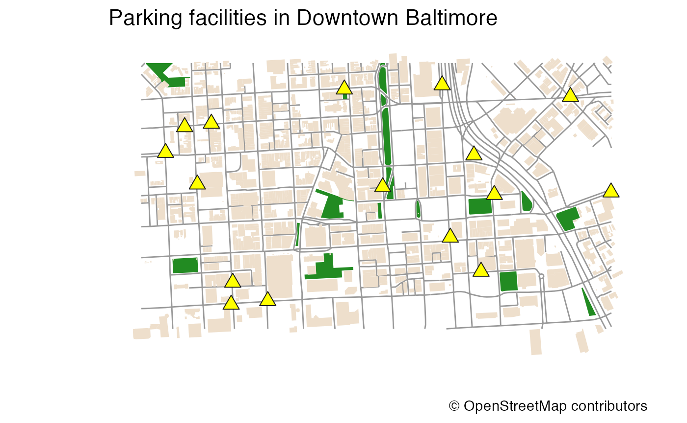
Finally, you can apply some additional function to the data using the
same lambda syntax used for purrr. For example, the tree
data includes dead trees which could be removed before displaying them
on a map.
layer_area_trees <- layer_area_data(
area = area,
extdata = "trees",
fn = ~ dplyr::filter(.x, condition != "Dead"),
trim = TRUE,
mapping = aes(
size = dbh * 0.4,
color = factor(condition, c("Good", "Fair", "Poor"))
),
alpha = 0.6,
layer_after = list(
guides(size = "none"),
labs(color = "Tree condition"),
scale_color_manual(values = shades::gradient(c("forestgreen", "burlywood4"), 3))
)
)
#> Reading layer `trees' from data source
#> `/private/var/folders/3f/50m42dx1333_dfqb5772j6_40000gn/T/Rtmpys5Z3S/temp_libpath5f71373ec142/mapbaltimore/extdata/trees.gpkg'
#> using driver `GPKG'
#> Simple feature collection with 1422 features and 15 fields
#> Geometry type: POINT
#> Dimension: XY
#> Bounding box: xmin: 432451.5 ymin: 179986.2 xmax: 434095.1 ymax: 180841.6
#> Projected CRS: NAD83(HARN) / Maryland
ggplot() +
background_layers +
layer_area_trees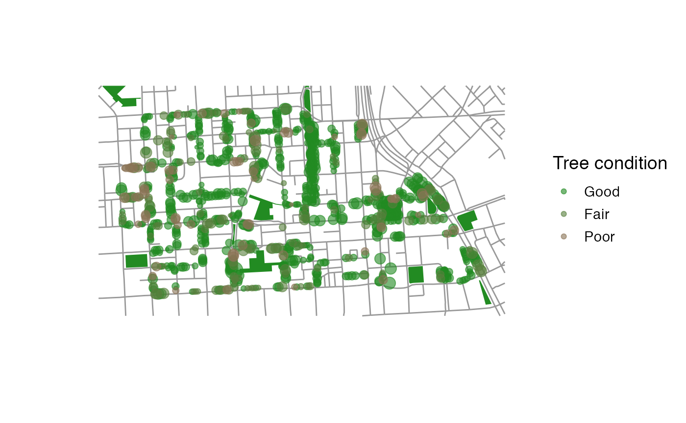
Working with multiple areas
There are a few different ways to use these functions with a
dataframe of multiple areas. The get_area_data() function
always combines multiple areas into a single geometry and returns data
for a bounding box that encompasses all areas.
If you want to get data for each area separately, the
dplyr::nest_by() and purrr::map_dfr()
functions can be used. The following example also shows how
get_nearby_areas() can be used to return a data frame of
overlapping or immediately surrounding areas.
nearby_areas <- get_nearby_areas(area = area, type = "neighborhood")
nearby_areas_nested <- dplyr::nest_by(nearby_areas, name, .keep = TRUE)
nearby_parks <- purrr::map_dfr(
nearby_areas_nested$data,
~ get_area_data(
area = .x,
data = parks,
trim = TRUE
) %>%
dplyr::bind_cols(neighborhood = .x$name)
)
ggplot() +
layer_area_data(area = nearby_areas, data = streets, trim = TRUE, color = "gray70") +
layer_parks +
geom_sf(data = nearby_parks, aes(fill = neighborhood)) +
scale_fill_viridis_d() +
labs(fill = "Neighborhood\nof park")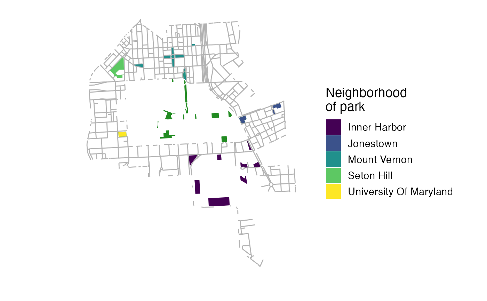
Another approach relies on using the data inherited from
ggplot() with the option to apply different aesthetics or
process the data differently in each layer of the map.
parks %>%
ggplot() +
layer_area_data(area = area, trim = TRUE, fill = "forestgreen", show_area = TRUE) +
layer_area_data(area = nearby_areas[6, ], trim = TRUE, fill = "yellowgreen", show_area = TRUE)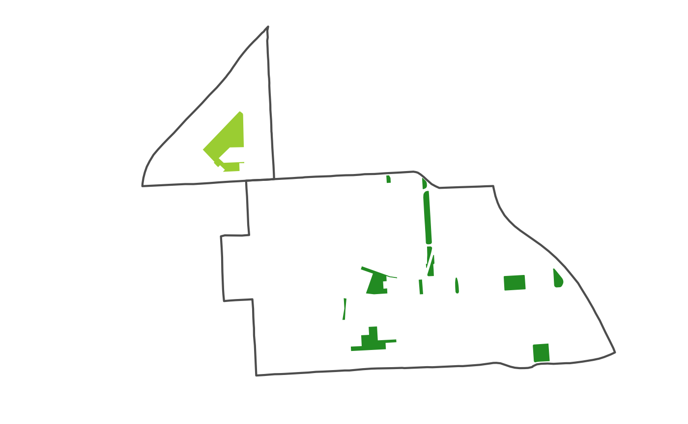